|
I am a research scientist at Nvidia Research. I graduated with a PhD in computer science from the University of Maryland, College Park, where I was advised by Prof. Rama Chellappa and Prof. Soheil Feizi . Prior to joining UMD, I obtained a Bachelor's degree (B.Tech) with a major in Electrical Engineering and a minor in Operations Research from Indian Institute of Technology, Madras . I work on problems in machine learning and computer vision, more specifically on multimodal learning, large-scale pretraining methods and generative models. My team is looking to hire interns for 2022. If you are interested, please reach out to me. Google Scholar | Github | Twitter | LinkedIn |

|
|
|
|
2021 |
|
| 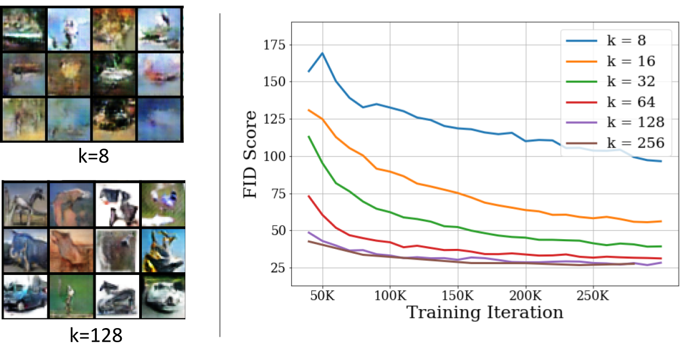 |
Yogesh Balaji, Mohammadmahdi Sajedi, Neha Kalibhat, Mucong Ding, Dominik Stoger, Mahdi Soltanolkotabi, Soheil Feizi. To appear in ICLR, 2021
pdf
| abstract
| bibtex
| Project page
A broad class of unsupervised deep learning methods such as Generative Adversarial Networks (GANs) involve training of overparameterized models where the number of parameters of the model exceeds a certain threshold. Indeed, most successful GANs used in practice are trained using overparameterized generator and discriminator networks, both in terms of depth and width. A large body of work in supervised learning have shown the importance of model overparameterization in the convergence of the gradient descent (GD) to globally optimal solutions. In contrast, the unsupervised setting and GANs in particular involve non-convex concave mini-max optimization problems that are often trained using Gradient Descent/Ascent (GDA). The role and benefits of model overparameterization in the convergence of GDA to a global saddle point in non-convex concave problems is far less understood. In this work, we present a comprehensive analysis of the importance of model overparameterization in GANs both theoretically and empirically. We theoretically show that in an overparameterized GAN model with a -layer neural network generator and a linear discriminator, GDA converges to a global saddle point of the underlying non-convex concave min-max problem. To the best of our knowledge, this is the first result for global convergence of GDA in such settings. Our theory is based on a more general result that holds for a broader class of nonlinear generators and discriminators that obey certain assumptions (including deeper generators and random feature discriminators). Our theory utilizes and builds upon a novel connection with the convergence analysis of linear time-varying dynamical systems which may have broader implications for understanding the convergence behavior of GDA for non-convex concave problems involving overparameterized models. We also empirically study the role of model overparameterization in GANs using several large-scale experiments on CIFAR-10 and Celeb-A datasets. Our experiments show that overparameterization improves the quality of generated samples across various model architectures and datasets. Remarkably, we observe that overparameterization leads to faster and more stable convergence behavior of GDA across the board.
@inproceedings{
balaji2021understanding,
title={Understanding Over-parameterization
in Generative Adversarial Networks},
author={Yogesh Balaji and Mohammadmahdi Sajedi and
Neha Mukund Kalibhat and Mucong Ding and
Dominik St{\"o}ger and Mahdi Soltanolkotabi
and Soheil Feizi},
booktitle={International Conference on Learning
Representations},
year={2021},
url={https://openreview.net/forum?id=C3qvk5IQIJY}
}
|
| 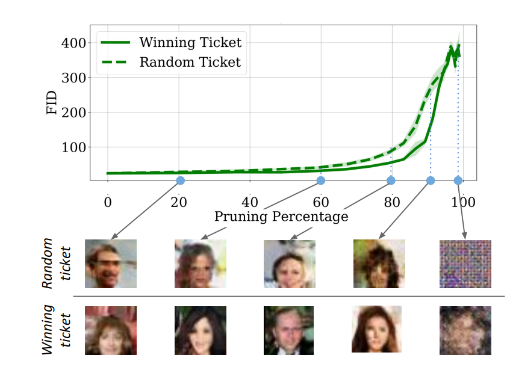 |
Neha Mukund Kalibhat, Yogesh Balaji, Soheil Feizi. To appear in AAAI, 2021
pdf
| abstract
| bibtex The lottery ticket hypothesis suggests that sparse, sub-networks of a given neural network, if initialized properly, can be trained to reach comparable or even better performance to that of the original network. Prior works in lottery tickets have primarily focused on the supervised learning setup, with several papers proposing effective ways of finding "winning tickets" in classification problems. In this paper, we confirm the existence of winning tickets in deep generative models such as GANs and VAEs. We show that the popular iterative magnitude pruning approach (with late rewinding) can be used with generative losses to find the winning tickets. This approach effectively yields tickets with sparsity up to 99% for AutoEncoders, 93% for VAEs and 89% for GANs on CIFAR and Celeb-A datasets. We also demonstrate the transferability of winning tickets across different generative models (GANs and VAEs) sharing the same architecture, suggesting that winning tickets have inductive biases that could help train a wide range of deep generative models. Furthermore, we show the practical benefits of lottery tickets in generative models by detecting tickets at very early stages in training called "early-bird tickets". Through early-bird tickets, we can achieve up to 88% reduction in floating-point operations (FLOPs) and 54% reduction in training time, making it possible to train large-scale generative models over tight resource constraints. These results out-perform existing early pruning methods like SNIP (Lee, Ajanthan, and Torr 2019) and GraSP (Wang, Zhang, and Grosse 2020). Our findings shed light towards existence of proper network initializations that could improve convergence and stability of generative models.
@article{kalibhat2020winning,
title={Winning Lottery Tickets
in Deep Generative Models},
author={Kalibhat, Neha Mukund and
Balaji, Yogesh and Feizi, Soheil},
journal={arXiv preprint arXiv:2010.02350},
year={2020}
}
|
2020 |
|
| 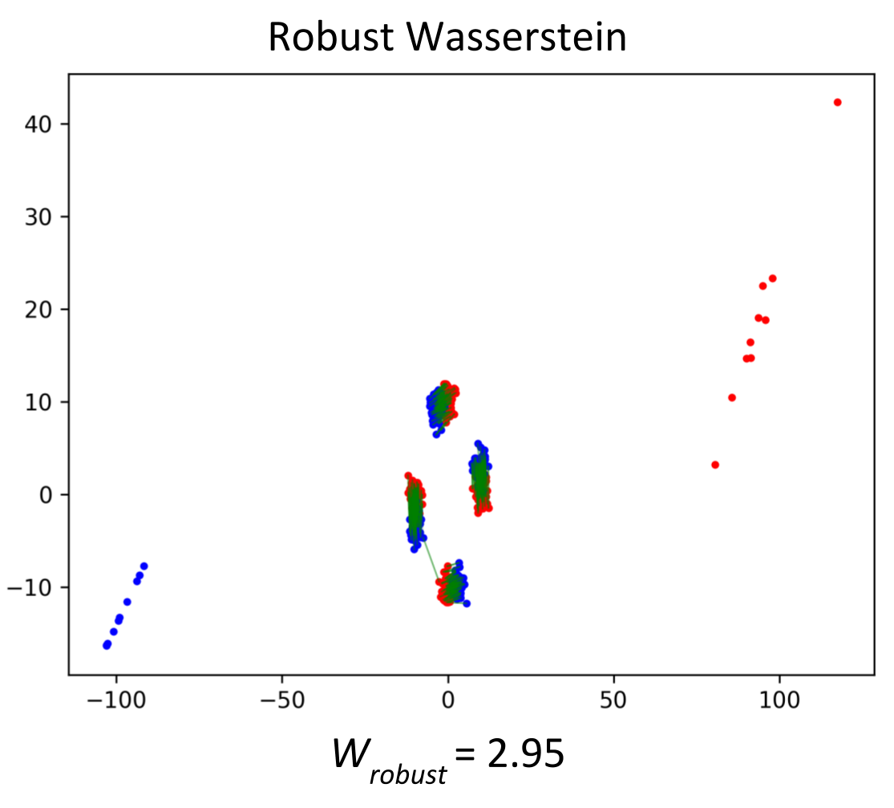 |
Yogesh Balaji, Rama Chellappa, Soheil Feizi. NeurIPS, 2020
pdf
| abstract
| bibtex
| code Optimal Transport (OT) distances such as Wasserstein have been used in several areas such as GANs and domain adaptation. OT, however, is very sensitive to outliers (samples with large noise) in the data since in its objective function, every sample, including outliers, is weighed similarly due to the marginal constraints. To remedy this issue, robust formulations of OT with unbalanced marginal constraints have previously been proposed. However, employing these methods in deep learning problems such as GANs and domain adaptation is challenging due to the instability of their dual optimization solvers. In this paper, we resolve these issues by deriving a computationally-efficient dual form of the robust OT optimization that is amenable to modern deep learning applications. We demonstrate the effectiveness of our formulation in two applications of GANs and domain adaptation. Our approach can train state-of-the-art GAN models on noisy datasets corrupted with outlier distributions. In particular, our optimization computes weights for training samples reflecting how difficult it is for those samples to be generated in the model. In domain adaptation, our robust OT formulation leads to improved accuracy compared to the standard adversarial adaptation methods.
@misc{balaji2020robust,
title={Robust Optimal Transport
with Applications in Generative Modeling
and Domain Adaptation},
author={Yogesh Balaji and Rama Chellappa
and Soheil Feizi},
year={2020},
eprint={2010.05862},
archivePrefix={arXiv},
primaryClass={cs.LG}
}
|
| 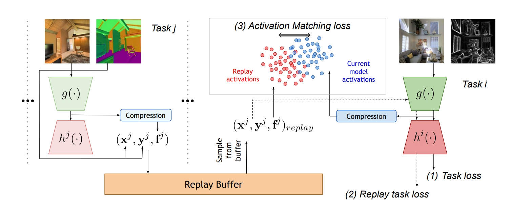 |
Yogesh Balaji, Mehrdad Farajtabar, Dong Yin, Alex Mott, Ang Li. arXiv, 2020
pdf
| abstract
| bibtex
| Talk We study continual learning in the large scale setting where tasks in the input sequence are not limited to classification, and the outputs can be of high dimension. Among multiple state-of-the-art methods, we found vanilla experience replay (ER) still very competitive in terms of both performance and scalability, despite its simplicity. However, a degraded performance is observed for ER with small memory. A further visualization of the feature space reveals that the intermediate representation undergoes a distributional drift. While existing methods usually replay only the input-output pairs, we hypothesize that their regularization effect is inadequate for complex deep models and diverse tasks with small replay buffer size. Following this observation, we propose to replay the activation of the intermediate layers in addition to the input-output pairs. Considering that saving raw activation maps can dramatically increase memory and compute cost, we propose the Compressed Activation Replay technique, where compressed representations of layer activation are saved to the replay buffer. We show that this approach can achieve superior regularization effect while adding negligible memory overhead to replay method. Experiments on both the large-scale Taskonomy benchmark with a diverse set of tasks and standard common datasets (Split-CIFAR and Split-miniImageNet) demonstrate the effectiveness of the proposed method.
@article{balaji2020effectiveness,
title={The Effectiveness of Memory Replay
in Large Scale Continual Learning},
author={Balaji, Yogesh and Farajtabar,
Mehrdad and Yin, Dong and Mott, Alex
and Li, Ang},
journal={arXiv preprint arXiv:2010.02418},
year={2020}
}
|
| 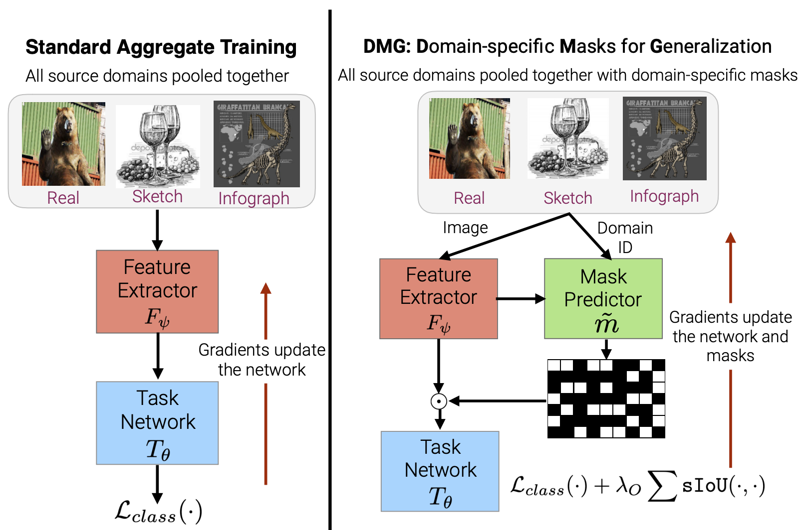 |
Prithvijit Chattopadhyay, Yogesh Balaji, Judy Hoffman. ECCV, 2020
pdf
| abstract
| bibtex
| code |
video We introduce Domain-specific Masks for Generalization, a model for improving both in-domain and out-of-domain generalization performance. For domain generalization, the goal is to learn from a set of source domains to produce a single model that will best generalize to an unseen target domain. As such, many prior approaches focus on learning representations which persist across all source domains with the assumption that these domain agnostic representations will generalize well. However, often individual domains contain characteristics which are unique and when leveraged can significantly aid in-domain recognition performance. To produce a model which best generalizes to both seen and unseen domains, we propose learning domain specific masks. The masks are encouraged to learn a balance of domain-invariant and domain-specific features, thus enabling a model which can benefit from the predictive power of specialized features while retaining the universal applicability of domain-invariant features. We demonstrate competitive performance compared to naive baselines and state-of-the-art methods on both PACS and DomainNet.
@inproceedings{2020EccvDMG,
author = {Chattopadhyay, Prithvijit and
Balaji, Yogesh and Hoffman,
Judy},
title = {Learning to Balance Specificity
and Invariance for In and Out
of Domain Generalization},
year = 2020,
booktitle = {European Conference in Computer
Vision (ECCV)}
}
|
| 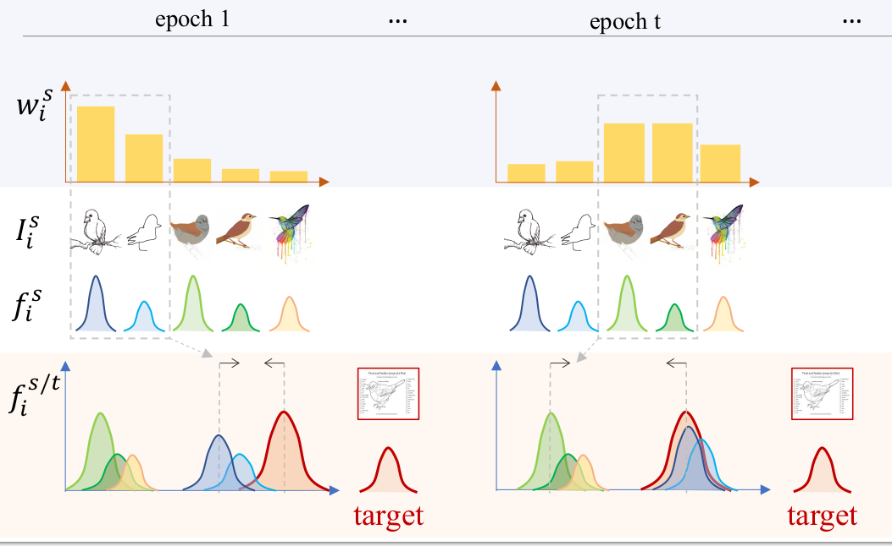 |
Luyu Yang, Yogesh Balaji, Ser-Nam Lim, Abhinav Shrivastava. ECCV, 2020 pdf
| abstract
| bibtex
The performance of Multi-Source Unsupervised Domain Adaptation depends significantly on the effectiveness of transfer from labeled source domain samples. In this paper, we proposed an adversarial agent that learns a dynamic curriculum for source samples, called Curriculum Manager for Source Selection (CMSS). The Curriculum Manager, an independent network module, constantly updates the curriculum during training, and iteratively learns which domains or samples are best suited for aligning to the target. The intuition behind this is to force the Curriculum Manager to constantly re-measure the transferability of latent domains over time to adversarially raise the error rate of the domain discriminator. CMSS does not require any knowledge of the domain labels, yet it outperforms other methods on four well-known benchmarks by significant margins. We also provide interpretable results that shed light on the proposed method.
@article{2020EccvCMSS,
title={Curriculum Manager for Source Selection
in Multi-Source Domain Adaptation},
author={Yang, Luyu and Balaji, Yogesh and
Lim, Ser-Nam and Shrivastava, Abhinav},
journal={arXiv preprint arXiv:2007.01261},
year={2020}
}
|
| 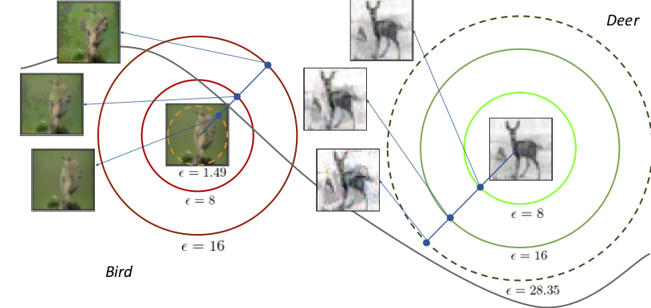 |
Yogesh Balaji, Tom Goldstein, Judy Hoffman. arXiv, 2020 pdf
| abstract
| bibtex
| code
| Project page Adversarial training is by far the most successful strategy for improving robustness of neural networks to adversarial attacks. Despite its success as a defense mechanism, adversarial training fails to generalize well to unperturbed test set. We hypothesize that this poor generalization is a consequence of adversarial training with uniform perturbation radius around every training sample. Samples close to decision boundary can be morphed into a different class under a small perturbation budget, and enforcing large margins around these samples produce poor decision boundaries that generalize poorly. Motivated by this hypothesis, we propose instance adaptive adversarial training -- a technique that enforces sample-specific perturbation margins around every training sample. We show that using our approach, test accuracy on unperturbed samples improve with a marginal drop in robustness. Extensive experiments on CIFAR-10, CIFAR-100 and Imagenet datasets demonstrate the effectiveness of our proposed approach.
@inproceedings{2020arXivInstanceAdaptive,
author = {Balaji, Yogesh and Goldstein, Tom
and Hoffman, Judy},
title = {Instance adaptive adversarial
training: Improved accuracy
tradeoffs in neural nets},
year = 2020,
booktitle = {arXiv}
}
|
| 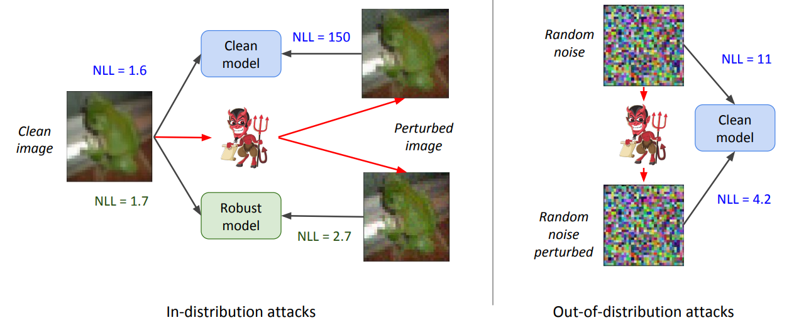 |
Phillip Pope*, Yogesh Balaji*, Soheil Feizi. AISTATS, 2020 pdf
| abstract
| bibtex Flow-based generative models leverage invertible generator functions to fit a distribution to the training data using maximum likelihood. Despite their use in several application domains, robustness of these models to adversarial attacks has hardly been explored. In this paper, we study adversarial robustness of flow-based generative models both theoretically (for some simple models) and empirically (for more complex ones). First, we consider a linear flow-based generative model and compute optimal sample-specific and universal adversarial perturbations that maximally decrease the likelihood scores. Using this result, we study the robustness of the well-known adversarial training procedure, where we characterize the fundamental trade-off between model robustness and accuracy. Next, we empirically study the robustness of two prominent deep, non-linear, flow-based generative models, namely GLOW and RealNVP. We design two types of adversarial attacks; one that minimizes the likelihood scores of in-distribution samples, while the other that maximizes the likelihood scores of out-of-distribution ones. We find that GLOW and RealNVP are extremely sensitive to both types of attacks. Finally, using a hybrid adversarial training procedure, we significantly boost the robustness of these generative models.
@inproceedings{pope2020adversarial,
title={Adversarial Robustness of
Flow-Based Generative Models},
author={Pope, Phillip and Balaji, Yogesh
and Feizi, Soheil},
booktitle={International Conference on
Artificial Intelligence and Statistics},
pages={3795--3805},
year={2020}
}
|
2019 |
|
| 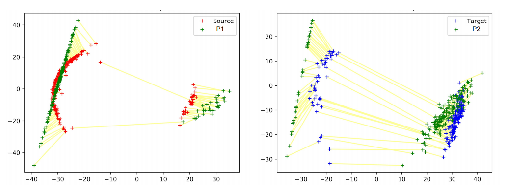 |
Yogesh Balaji, Rama Chellappa, Soheil Feizi. ICCV, 2019 pdf
| abstract
| bibtex
| code
| Project page Understanding proper distance measures between distributions is at the core of several learning tasks such as generative models, domain adaptation, clustering, etc. In this work, we focus on mixture distributions that arise naturally in several application domains where the data contains different sub-populations. For mixture distributions, established distance measures such as the Wasserstein distance do not take into account imbalanced mixture proportions. Thus, even if two mixture distributions have identical mixture components but different mixture proportions, the Wasserstein distance between them will be large. This often leads to undesired results in distance-based learning methods for mixture distributions. In this paper, we resolve this issue by introducing the Normalized Wasserstein measure. The key idea is to introduce mixture proportions as optimization variables, effectively normalizing mixture proportions in the Wasserstein formulation. Using the proposed normalized Wasserstein measure leads to significant performance gains for mixture distributions with imbalanced mixture proportions compared to the vanilla Wasserstein distance. We demonstrate the effectiveness of the proposed measure in GANs, domain adaptation and adversarial clustering in several benchmark datasets.
@InProceedings{Balaji_2019_ICCV,
author = {Balaji, Yogesh and Chellappa,
Rama and Feizi, Soheil},
title = {Normalized Wasserstein for
Mixture Distributions With
Applications in Adversarial
Learning and Domain Adaptation},
booktitle = {Proceedings of the IEEE/CVF
International Conference on Computer
Vision (ICCV)},
month = {October},
year = {2019}
}
|
| 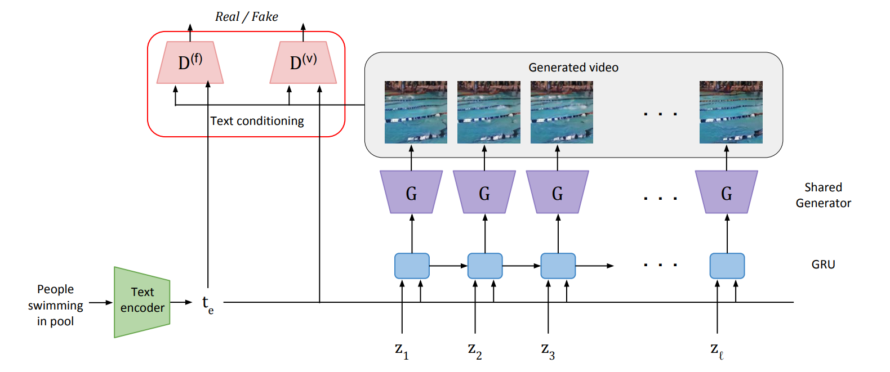 |
Yogesh Balaji, Martin Renqiang Min, Bing Bai, Rama Chellappa, Hans Peter Graf. IJCAI, 2019 pdf
| abstract
| bibtex Developing conditional generative models for text-to-video synthesis is an extremely challenging yet an important topic of research in machine learning. In this work, we address this problem by introducing Text-Filter conditioning Generative Adversarial Network (TFGAN), a conditional GAN model with a novel multi-scale text-conditioning scheme that improves text-video associations. By combining the proposed conditioning scheme with a deep GAN architecture, TFGAN generates high quality videos from text on challenging real-world video datasets. In addition, we construct a synthetic dataset of text-conditioned moving shapes to systematically evaluate our conditioning scheme. Extensive experiments demonstrate that TFGAN significantly outperforms existing approaches, and can also generate videos of novel categories not seen during training.
@inproceedings{ijcai2019-276,
title = {Conditional GAN with Discriminative
Filter Generation for Text-to-Video Synthesis},
author = {Balaji, Yogesh and Min, Martin Renqiang
and Bai, Bing and Chellappa, Rama and
Graf, Hans Peter},
booktitle = {Proceedings of the Twenty-Eighth
International Joint Conference on
Artificial Intelligence, {IJCAI-19}},
year = {2019}
}
|
| 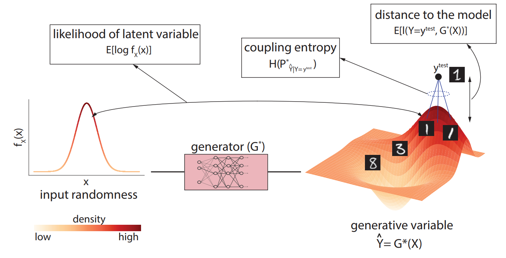 |
Yogesh Balaji, Hamed Hassani, Rama Chellappa, Soheil Feizi. ICML, 2019 pdf
| abstract
| bibtex
| code
| Slides
| Talk Building on the success of deep learning, two modern approaches to learn a probability model from the data are Generative Adversarial Networks (GANs) and Variational AutoEncoders (VAEs). VAEs consider an explicit probability model for the data and compute a generative distribution by maximizing a variational lower-bound on the log-likelihood function. GANs, however, compute a generative model by minimizing a distance between observed and generated probability distributions without considering an explicit model for the observed data. The lack of having explicit probability models in GANs prohibits computation of sample likelihoods in their frameworks and limits their use in statistical inference problems. In this work, we resolve this issue by constructing an explicit probability model that can be used to compute sample likelihood statistics in GANs. In particular, we prove that under this probability model, a family of Wasserstein GANs with an entropy regularization can be viewed as a generative model that maximizes a variational lower-bound on average sample log likelihoods, an approach that VAEs are based on. This result makes a principled connection between two modern generative models, namely GANs and VAEs. In addition to the aforementioned theoretical results, we compute likelihood statistics for GANs trained on Gaussian, MNIST, SVHN, CIFAR-10 and LSUN datasets. Our numerical results validate the proposed theory.
@InProceedings{pmlr-v97-balaji19a,
title = {Entropic {GAN}s meet {VAE}s:
A Statistical Approach to Compute Sample
Likelihoods in {GAN}s},
author = {Balaji, Yogesh and Hassani,
Hamed and Chellappa, Rama and Feizi, Soheil},
pages = {414--423},
year = {2019},
series = {Proceedings of Machine
Learning Research},
address = {Long Beach, California, USA},
month = {09--15 Jun},
publisher = {PMLR}
}
|
2018 |
|
| 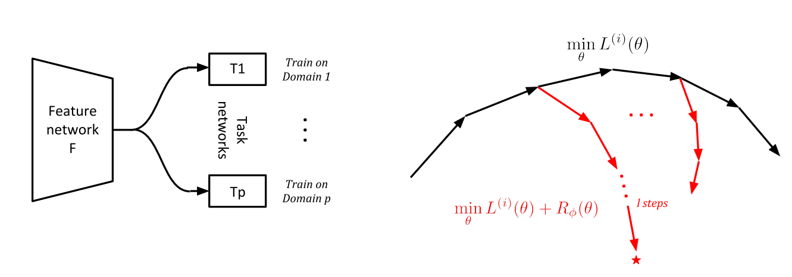 |
Yogesh Balaji, Swami Sankaranarayanan, Rama Chellappa. NeurIPS, 2018 pdf
| abstract
| bibtex Training models that generalize to new domains at test time is a problem of fundamental importance in machine learning. In this work, we encode this notion of domain generalization using a novel regularization function. We pose the problem of finding such a regularization function in a Learning to Learn (or) meta-learning framework. The objective of domain generalization is explicitly modeled by learning a regularizer that makes the model trained on one domain to perform well on another domain. Experimental validations on computer vision and natural language datasets indicate that our method can learn regularizers that achieve good cross-domain generalization.
@incollection{NIPS2018_7378,
title = {MetaReg: Towards Domain
Generalization using Meta-Regularization},
author = {Balaji, Yogesh and Sankaranarayanan,
Swami and Chellappa, Rama},
booktitle = {Advances in Neural Information
Processing Systems 31},
pages = {998--1008},
year = {2018},
publisher = {Curran Associates, Inc.},
}
|
| 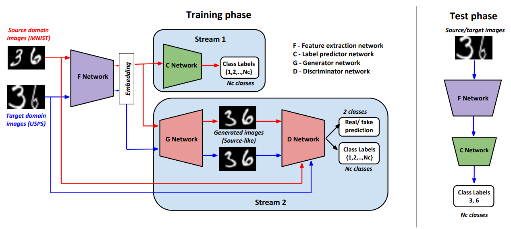 |
Swami Sankaranarayan*, Yogesh Balaji*, Carlos D. Castillo, Rama Chellappa. CVPR, 2018 pdf
| abstract
| bibtex
| code
| Talk Domain Adaptation is an actively researched problem in Computer Vision. In this work, we propose an approach that leverages unsupervised data to bring the source and target distributions closer in a learned joint feature space. We accomplish this by inducing a symbiotic relationship between the learned embedding and a generative adversarial network. This is in contrast to methods which use the adversarial framework for realistic data generation and retraining deep models with such data. We demonstrate the strength and generality of our approach by performing experiments on three different tasks with varying levels of difficulty: (1) Digit classification (MNIST, SVHN and USPS datasets) (2) Object recognition using OFFICE dataset and (3) Domain adaptation from synthetic to real data. Our method achieves state-of-the art performance in most experimental settings and by far the only GAN-based method that has been shown to work well across different datasets such as OFFICE and DIGITS
@inproceedings{sankaranarayanan2018generate,
title={Generate to adapt: Aligning domains
using generative adversarial networks},
author={Sankaranarayanan, Swami and Balaji, Yogesh
and Castillo, Carlos D and Chellappa, Rama},
booktitle={Proceedings of the IEEE Conference
on Computer Vision and Pattern Recognition},
pages={8503--8512},
year={2018}
}
|
| 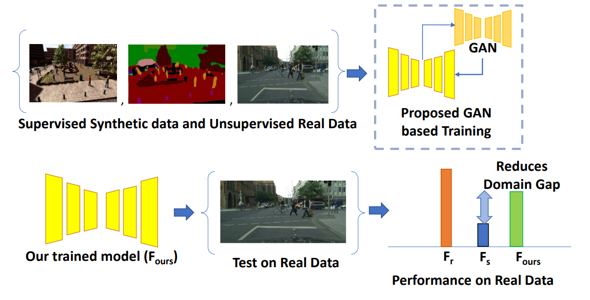 |
Swami Sankaranarayan*, Yogesh Balaji*, Arpit Jain, Ser Nam Lim, Rama Chellappa. CVPR, 2018 pdf
| abstract
| bibtex
| code
| Talk Visual Domain Adaptation is a problem of immense importance in computer vision. Previous approaches showcase the inability of even deep neural networks to learn informative representations across domain shift. This problem is more severe for tasks where acquiring hand labeled data is extremely hard and tedious. In this work, we focus on adapting the representations learned by segmentation networks across synthetic and real domains. Contrary to previous approaches that use a simple adversarial objective or superpixel information to aid the process, we propose an approach based on Generative Adversarial Networks (GANs) that brings the embeddings closer in the learned feature space. To showcase the generality and scalability of our approach, we show that we can achieve state of the art results on two challenging scenarios of synthetic to real domain adaptation. Additional exploratory experiments show that our approach: (1) generalizes to unseen domains and (2) results in improved alignment of source and target distributions.
@InProceedings{Sankaranarayanan_2018_CVPR,
author = {Sankaranarayanan, Swami and Balaji, Yogesh
and Jain, Arpit and Lim, Ser Nam and Chellappa, Rama},
title = {Learning From Synthetic Data: Addressing Domain
Shift for Semantic Segmentation},
booktitle = {Proceedings of the IEEE Conference on Computer
Vision and Pattern Recognition (CVPR)},
month = {June},
year = {2018}
}
|
2017 |
|
| 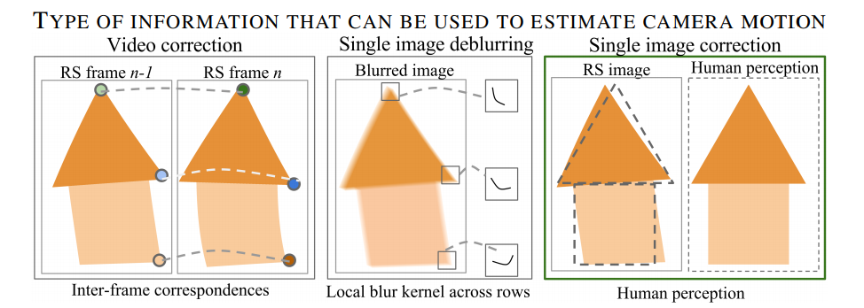 |
Vijay Rengarajan, Yogesh Balaji*, A. N. Rajagopalan. CVPR, 2017 pdf
| abstract
| bibtex
| code
| Project page
| Talk Row-wise exposure delay present in CMOS cameras is responsible for skew and curvature distortions known as the rolling shutter (RS) effect while imaging under camera motion. Existing RS correction methods resort to using multiple images or tailor scene-specific correction schemes. We propose a convolutional neural network (CNN) architecture that automatically learns essential scene features from a single RS image to estimate the row-wise camera motion and undo RS distortions back to the time of first-row exposure. We employ long rectangular kernels to specifically learn the effects produced by the row-wise exposure. Experiments reveal that our proposed architecture performs better than the conventional CNN employing square kernels. Our single-image correction method fares well even operating in a frame-by-frame manner against video-based methods and performs better than scene-specific correction schemes even under challenging situations.
@inproceedings{UnrollingShutter_CVPR17,
Author = {Vijay Rengarajan and Yogesh Balaji
and A.N. Rajagopalan},
Title = {Unrolling the Shutter: CNN to Correct
Motion Distortions},
Booktitle = {Computer Vision and Pattern
Recognition (CVPR)},
Year = {2017}
}
|
2016 |
|
| 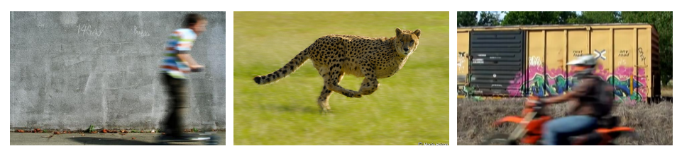 |
Abhijith Punnappurath, Yogesh Balaji*, Mahesh Mohan, A. N. Rajagopalan. ECCV, 2016 pdf
| abstract
| bibtex
| Project page We address the challenging problem of segmenting dynamic objects given a single space-variantly blurred image of a 3D scene captured using a hand-held camera. The blur induced at a particular pixel on a moving object is due to the combined effects of camera motion, the object’s own independent motion during exposure, its relative depth in the scene, and defocusing due to lens settings. We develop a deep convolutional neural network (CNN) to predict the probabilistic distribution of the composite kernel which is the convolution of motion blur and defocus kernels at each pixel. Based on the defocus component, we segment the image into different depth layers. We then judiciously exploit the motion component present in the composite kernels to automatically segment dynamic objects at each depth layer. Jointly handling defocus and motion blur enables us to resolve depth-motion ambiguity which has been a major limitation of the existing segmentation algorithms. Experimental evaluations on synthetic and real data reveal that our method significantly outperforms contemporary techniques.
@inproceedings{punnappurath2016deep,
title={Deep decoupling of defocus
and motion blur for dynamic
segmentation},
author={Punnappurath, Abhijith
and Balaji, Yogesh
and Mohan, Mahesh and
Rajagopalan, Ambasamudram Narayanan},
booktitle={European Conference on
Computer Vision},
pages={750--765},
year={2016},
organization={Springer}
}
|
|
|